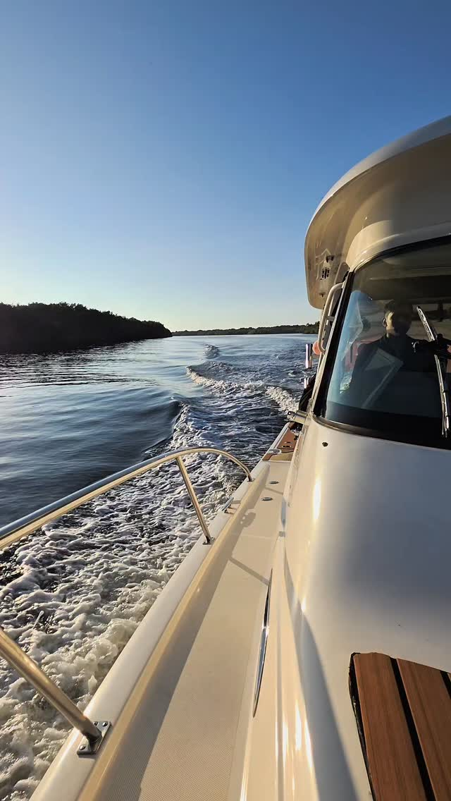
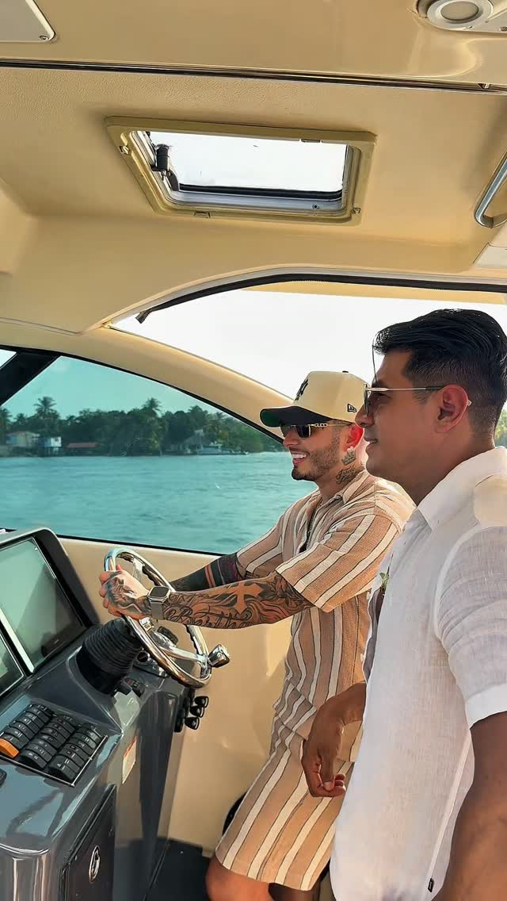

01
Costa del Sol · Estero de Jaltepeque
Yates privados en Costa del Sol
Sube a bordo con Yates de Mike y vive el Pacífico salvadoreño desde una ruta privada: estero, mar abierto, atardecer y celebraciones con atención cercana para tu grupo.
Reserva privada
Cuéntanos tu plan
Experiencia local, presentación premium
Costa del Sol se disfruta mejor desde el agua.
Entre el Estero de Jaltepeque y el Pacífico, Yates de Mike prepara salidas privadas para descansar, celebrar y crear contenido real en uno de los destinos de playa más memorables de El Salvador.
Planes privados
Elige cómo quieres vivir Costa del Sol
Rutas pensadas para grupos, parejas, familias y celebraciones que quieren una salida cuidada, privada y fácil de coordinar.
02
Sunset en Costa del Sol
La salida perfecta para cerrar la tarde con luz dorada, fotos reales y un ambiente más íntimo.03
Celebraciones a bordo
Cumpleaños, aniversarios, pedidas, reuniones privadas y momentos especiales con una ruta hecha para el grupo.Ruta Costa del Sol
Del estero al Pacífico, con el ritmo que pide tu grupo.
Costa del Sol combina agua tranquila, paisaje de manglar y salida al Pacífico. La experiencia se adapta a tu ocasión: paseo relajado, celebración, fotos al atardecer o un día completo con música y privacidad.
- Estero de JaltepequeRecorrido tranquilo entre canales, paisaje costero y ambiente privado.
- Pacífico salvadoreñoBrisa, mar abierto y una sensación de escape sin salir de Costa del Sol.
- Atardecer privadoEl momento más fotográfico para parejas, cumpleaños y grupos pequeños.
Servicio
Un servicio privado, claro y bien cuidado
Coordinación directa
Se revisa fecha, número de invitados, ocasión y horario para recomendar la mejor salida.
Abordaje en Costa del Sol
Se confirman punto de encuentro, recomendaciones y detalles antes de llegar a la playa.
Momentos reales
El paisaje, la luz y el movimiento del yate crean videos y fotos auténticas del día.
Ambiente privado
El plan se adapta a descanso, cumpleaños, parejas, amigos o reuniones especiales.
Cómo reservar
Reserva sin complicaciones
Comparte la fecha
Indica cuántas personas van, qué celebran y si prefieren mañana, mediodía o atardecer.
Recibe opciones
Yates de Mike te orienta con disponibilidad, ruta recomendada y detalles de la experiencia.
Llega a Costa del Sol
Tu grupo recibe las indicaciones para abordar y empezar el recorrido privado.
Videos reales
Momentos de Yates de Mike en Costa del Sol
Reels y momentos a bordo para ver el ambiente, la ruta y la energía de una salida privada en la costa salvadoreña.


Instagram oficial
Más salidas reales en @yatesdemike.sv
El perfil muestra recorridos, ambiente a bordo y contenido reciente para que cada reserva se sienta confiable antes de llegar a Costa del Sol.